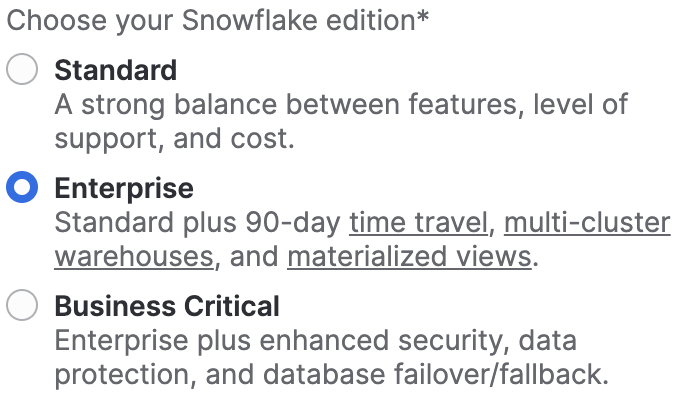

Visão geral
Neste quickstart "Introdução à Tasty Bytes", você vai conhecer a marca fictícia de food trucks Tasty Bytes, criada pela equipe frostbyte da Snowflake.
Após saber mais sobre a organização Tasty Bytes, vamos realizar o processo de configuração do modelo de dados funcional da Tasty Bytes, bem como de funções e armazenamentos específicos das cargas de trabalho e de todo o controle de acesso baseado em funções (role-based access control, RBAC) necessário.
Ao finalizar este guia, você terá implementado os elementos básicos necessários para executar os quickstarts da seção Powered by Tasty Bytes - quickstarts.
Quem é a Tasty Bytes?

Pré-requisitos
- Um navegador compatível com Snowflake.
- Conta Snowflake Enterprise ou Business Critical.
- Caso não possua uma conta Snowflake, inscreva-se para receber uma conta de avaliação gratuita de 30 dias. No ato da inscrição, escolha a opção Enterprise. É possível escolher qualquer nuvem/região do Snowflake.
- Após a inscrição, você receberá um email com um link de ativação e a URL da sua conta Snowflake.
- 
Você vai aprender
- Criar uma planilha do Snowflake.
- Executar todas as consultas de uma planilha do Snowflake de forma síncrona.
- Explorar bancos de dados, esquemas, tabelas, funções e armazenamentos via SQL em uma planilha do Snowflake.
O que será desenvolvido
- Elementos básicos para a Tasty Bytes que permitam executar os Powered by Tasty Bytes - quickstarts.
- Um banco de dados Snowflake.
- Esquemas brutos, harmonizados e analíticos completos com tabelas e exibições.
- Funções e armazenamentos Snowflake específicos das cargas de trabalho.
- Controle de acesso baseado em funções (RBAC)
Visão geral
Neste quickstart, você usará a interface da web do Snowflake, conhecida como Snowsight. Caso seja sua primeira vez usando o Snowsight, recomendamos consultar a documentação do Snowsight para obter orientações gerais.
Etapa 1 - Acessar o Snowflake via URL
- Abra o navegador e insira a URL da sua conta Snowflake. Caso ainda não tenha uma conta Snowflake, volte à seção anterior para se inscrever em uma conta de avaliação gratuita.
Etapa 2 - Fazer login no Snowflake
- Acesse sua conta Snowflake.

Etapa 3 - Acessar as planilhas
- Clique na guia Worksheets na barra de navegação à esquerda.

Etapa 4 - Criar uma planilha
- Dentro da guia Worksheets, clique no botão "+" no canto superior direito do Snowsight e escolha "SQL Worksheet".

Etapa 5 - Renomear uma planilha
- Renomeie a planilha clicando no carimbo de data/hora gerado automaticamente e digite "Tasty Bytes, configuração".

Etapa 6 - Acessar o Setup SQL armazenado no GitHub
- Clique no botão abaixo para acessar o arquivo Tasty Bytes Setup SQL hospedado no GitHub.
Etapa 7 - Copiar o Setup SQL do GitHub
- No GitHub, navegue para a direita e clique em "Copy raw contents". Todas as informações SQL necessárias serão copiadas para sua área de transferência.

Etapa 8 - Colar o Setup SQL do GitHub para a sua planilha do Snowflake
- Volte para o Snowsight e sua planilha recém-criada e cole (CMD + V no Mac ou CTRL + V no Windows) o conteúdo copiado do GitHub.
Etapa 9 - Executar de modo síncrono todo o Setup SQL
- Clique dentro da nova planilha Tasty Bytes - Setup, selecione tudo (CMD + A no Mac ou CTRL + A no Windows) e clique em "► Run".

Etapa 10 - Concluir a configuração
- Após clicar em "► Run", as consultas começarão a ser executadas. As consultas vão ser executadas uma após a outra, com a conclusão da planilha em cerca de 5 minutos. Após a conclusão, você verá a seguinte mensagem:
frostbyte_tasty_bytes setup is now complete.

Etapa 11 - Clicar em Next –>
Visão geral
Após configurar a Tasty Bytes com sucesso, podemos agora explorar o banco de dados, as funções e os armazenamentos que criamos.
Etapa 1 - Explorar o banco de dados Tasty Bytes
Essa consulta apresentará o banco de dados que criamos com o comando SHOW DATABASES.
SHOW DATABASES LIKE 'frostbyte_tasty_bytes';
 .
.
Etapa 2 - Explorar os esquemas dentro do banco de dados Tasty Bytes
Essa consulta apresentará os esquemas dentro do banco de dados que criamos com o comando SHOW SCHEMAS.
SHOW SCHEMAS IN DATABASE frostbyte_tasty_bytes;
 .
.
Etapa 3 - Explorar as tabelas do esquema RAW_POS no banco de dados Tasty Bytes
Esta consulta apresentará as tabelas no esquema raw_pos com o comando SHOW TABLES
SHOW TABLES IN SCHEMA frostbyte_tasty_bytes.raw_pos;
 .
.
Etapa 4 - Explorar as funções Tasty Bytes
Essa consulta apresentará as funções que criamos com o comando SHOW ROLES.
SHOW ROLES LIKE 'tasty%';
 .
.
Etapa 5 - Explorar os armazenamentos Tasty Bytes
Esta consulta apresentará os armazenamentos que criamos com o comando SHOW WAREHOUSES.
SHOW WAREHOUSES LIKE 'tasty%';
 .
.
Etapa 6 - Combinar todos os elementos
As próximas três consultas vão: 1. Assumir a função tasty_data_engineer com o comando USE ROLE. 2. Usar o armazenamento tasty_de_wh com o comando USE WAREHOUSE. 3. Consultar nossa tabela raw_pos.menu para saber quais itens do menu são vendidos em nossos food trucks com a marca Plant Palace.
USE ROLE tasty_data_engineer;
USE WAREHOUSE tasty_de_wh;
SELECT
m.menu_type_id,
m.menu_type,
m.truck_brand_name,
m.menu_item_name
FROM frostbyte_tasty_bytes.raw_pos.menu m
WHERE m.truck_brand_name = 'Plant Palace';

Incrível! Em poucos minutos temos um ambiente de demonstração Tasty Bytes completo com dados, funções e armazenamentos configurados na nossa conta Snowflake. Agora, vamos ver todos os outros Tasty Bytes Quickstarts que podemos usar.
Etapa 7 - Clicar em Next –>
Visão geral
Parabéns! Você acaba de concluir a configuração dos elementos básicos para a Tasty Bytes!
O índice abaixo vai listar todos os Tasty Bytes Quickstarts que podem utilizar os elementos básicos que você acaba de criar.

Do zero ao Snowflake
Governança financeira
- Saiba mais sobre os armazenamentos virtuais Snowflake e suas opções de configuração, monitores de recursos e parâmetros de tempo limite no nível de conta e armazenamento.
Transformação
- Saiba mais sobre o Snowflake Zero Copy Cloning, cache de conjunto de resultados, manipulação de tabelas, Time-Travel e funcionalidades de troca, descarte e cancelamento de descarte de tabelas.
Dados semiestruturados
- Saiba mais sobre o formato VARIANT de dados do Snowflake, processamento de dados semiestruturados com uso de notação de pontos e nivelamento lateral, bem como criação de exibições e criação de gráficos com o Snowsight.
Governança de dados
- Saiba mais sobre as funções definidas pelo sistema Snowflake, crie e aplique permissões a uma função personalizada e implemente Dynamic Data Masking baseado em tags e políticas de acesso a linhas.
Colaboração
- Saiba mais sobre o Snowflake Marketplace com dados ativos gratuitos, disponibilizados instantaneamente pelo Weather Source para conduzir análises baseadas em dados, harmonizando fontes primárias e terciárias.
Geoespacial
- Saiba mais sobre o suporte geoespacial do Snowflake, começando pela aquisição gratuita de dados ativos e disponíveis instantaneamente do SafeGraph, depois passando para a criação de pontos geográficos (ST_POINT), cálculos de distância (ST_DISTANCE), coleta de coordenadas (ST_COLLECT), criação de um polígono de delimitação mínimo (ST_ENVELOPE), cálculo de área (ST_AREA) e determinação de pontos centrais (ST_CENTROID).